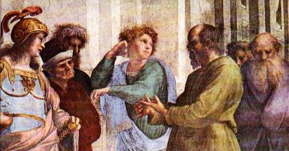

Socráticos
Megáricos

Escuela de Megara
Cuando murió Sócrates, su discípulo Euclides volvió a su ciudad natal de Megara y fundó una escuela, que se desarrolló principalmente durante el siglo –IV.
Esta escuela fue conocida como megárica y también como erística, a causa de su afición a las disputas dialécticas. Según Diogenes Laercio a los que siguieron sus doctrinas se les llamó primero megáricos, luego disputadores y finalmente, dialécticos.
Euclides trasladó a la escuela sus propias ideas y experiencias, mezclando las doctrinas de los eleatas, principalmente las de Parménides y Zenón, con la ética socrática. Bajo la influencia socrática, buscan la verdad entendida como el bien, que está más allá de lo que está presente, para los megáricos, solo existe una cosa realmente: el bien, aunque se dice de muchas maneras, aparte del bien no hay ninguna otra cosa.
Los rasgos más notable de esta escuela muy marcados por su fundador son:
- La influencia eleata en la ontología y epistemología. El ser es uno, eterno, inmutable e indivisible, el movimiento es ininteligible, dada la plena actualidad del ser, al conocimiento del ser se llega exclusivamente por la razón y no por sentidos.
- El influjo socrático en ética. La preocupación moral de los megáricos proviene de su contacto con Sócrates. Identificaron el bien socrático con el ser parmenideo.
- Lógica. Las preocupaciones lógicas de los megáricos les llevaron al planteamiento de una serie de problemas que suponen una importante contribuciones al desarrollo de la lógica, principalmente:
La formulación de interesantes paradojas lógicas y semánticas, la consideración de algunas nociones modales en lógica, y algunos planteamientos sobre la naturaleza de los enunciados condicionales. Aunque mostraron un excesivo interés por la erística.
La lógica megárica fue la base para el posterior desarrollo de la lógica estoica, impulsada principalmente por Crisipo.
- Combinación de eleatas y Sócrates. Se puede apreciar la influencia de la escuela eleática, a la que había pertenecido Euclides antes de ser discípulo de Sócrates. La unidad absoluta del ser, identificado con el bien, fuera del cual nada real existe, constituye uno de los principios de esta escuela, que precisamente por esto se vio obligada a buscar recursos en la dialéctica o la sofística, con el fin de defender dicha doctrina, como antes hicieron los eleáticos.
Por su raíz socrática, buscaban la verdad, entendida como el bien, más allá de lo inmediatamente presente.
Combinando ambas ideas, identificaron el bien de Sócrates con lo uno e inmóvil de Parménides y lo denominaron "dios", "sabiduría" o "entendimiento". Para ellos, el ser inmóvil del que habla Parménides es el mismo bien del que hablaba Sócrates.
Seguidores. Entre los primeros seguidores predomina la dialéctica, que degenera en algunos casos simplemente en disputa o erística. Los discípulos principales de la escuela megárica fueron: Eubulides de Mileto, Diodoro Cronos, Alexino o Alexio de Elea, y Estilpón de Megara. Se destacaron, como luego los estoicos, por el estudio de la lógica proposicional.
Diodoro Cronos, natural de Jaso y discípulo de Apolonio, quien a su vez lo había sido de Eubulides, vivió y enseñó en Egipto, bajo el reinado de Tolomeo Soter. Reelaboró las aporías de Zenón de Elea para negar el movimiento. Diodoro afirmaba que sólo puede hablarse del ser en tanto que ser actual (teoría relacionada con su negación del movimiento) y que nada puede decirse del ser meramente posible.
Estilpón de Megara fue maestro de Zenón de Citio, fundador del estoicismo, por lo que se puede establecer una relación entre ambas escuelas.
Introdujo elementos cínicos en la ética socrática, profundizando el sentido ascético y desarrollando una moral próxima a la de los cínicos. La felicidad se alcanza mediante la supresión de las necesidades y la indiferencia de los bienes externos. La felicidad tiene su fundamento en la virtud.
Euclides de Megara
Euclides de Megara (aprox. -450 a -380), fue uno de los discípulos que acompañaron a Sócrates en sus últimos momentos. Después de la muerte de Sócrates, Euclides, junto con otros socráticos (entre ellos Platón) se refugió en Megara, donde fundó su propia escuela.
Inicialmente fue seguidor de las tesis de los eleatas, pero en Atenas se hizo discípulo de Sócrates. Combinó las tesis de Parménides con la ética socrática, identificando el uno parmenídeo con el bien socrático, y la unidad con la virtud.
Se interesó también por la lógica y, bajo la influencia de Zenón de Elea, por la dialéctica. Siguiendo a Parménides, mantuvo que de lo que no es el bien no puede decirse nada, porque no existe. Para defender sus afirmaciones recurría a la reducción al absurdo de los argumentos contrarios, siguiendo a Zenón de Elea. Con esto dio origen a la erística, que caracterizó a la escuela megárica
Fragmentos
Estos fragmentos están tomados del libro de Diógenes de Laercio.
De Euclides:- Estudió las obras de Parménides y los que siguieron sus dogmas se llamaron megáricos, luego disputadores y últimamente dialécticos.
- Definía que sólo hay un bien, llamado con nombres diversos: unas veces sabiduría, otras dios, otras mente, y semejantes.
<- Atrás